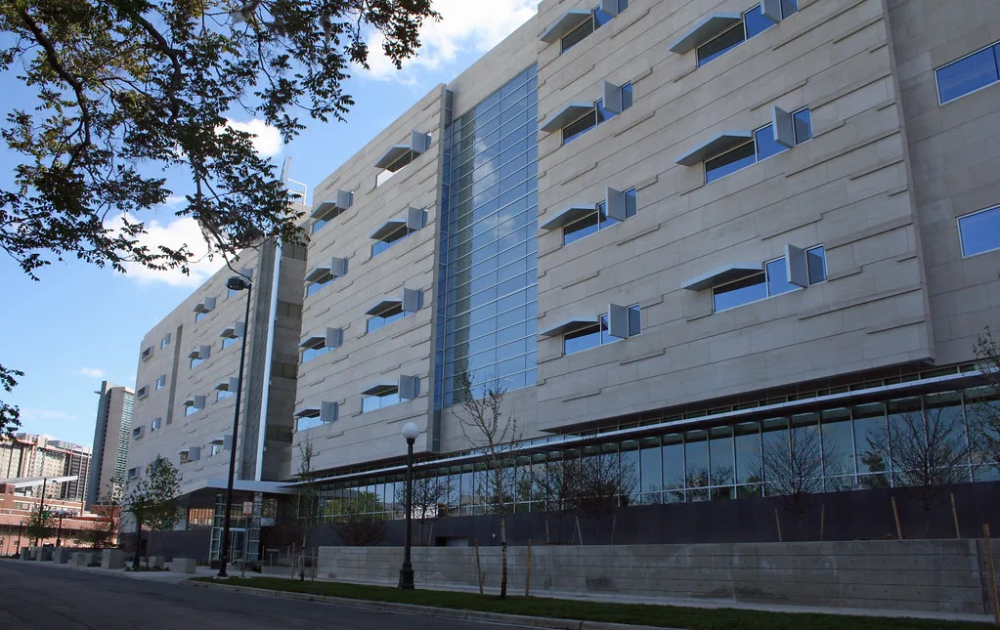

윤석열·김건희, 구치소에서 두 번째 추석…특식 없는 명절 밥상
윤석열 전 대통령과 배우자 김건희 여사가 구속 상태로 두 번째 추석 연휴를 맞았다. 윤 전 대통령은 경기 의왕시 서울구치소에, 김 여사는 서울남부구치소에 각각 수감돼 있다. 두 사람이 명절을 수감 상태로 보내는 것은 지난해에 이어 이번이 두 번째로, 부부가 나란히 구치소에서 추석을 맞이하는 모습이 이어지고 있다. 지난해 첫 명절 때와 마찬가지로 이번에도 두 사람은 각기 다른 구치소에서 따로 연휴를 보내게 됐다.
교정 당국이 공개한 추석 당일 식단을 보면 두 사람 모두 평소와 다르지 않은 일반식을 배식받는다. 윤 전 대통령은 아침으로 사골우거지국과 무말랭이 무침, 배추김치를, 점심으로 묵은지 해장국과 달걀찜, 떠먹는 요구르트, 깍두기를 받는다. 저녁 메뉴는 참깨옹심이국과 돼지장조림, 배추김치로 구성됐다. 김 여사의 경우 아침은 표고어묵국과 무말랭이 무침, 배추김치이며, 점심은 청국장과 생선튀김, 비빔채소, 고추장, 무생채가 나온다. 저녁으로는 돼지고기 김치찌개와 달걀찜, 꽈리멸치볶음, 총각김치가 제공된다.
두 사람에게 별도의 명절 특식은 제공되지 않는다. 교정 당국은 올해부터 예산 문제로 추석과 설 명절 특식 제공을 중단했으며, 예산이 다시 확보되면 특식 제공을 재개할 계획이라고 설명했다. 이는 윤 전 대통령 부부에게만 적용되는 조치가 아니라 전국 교정시설 수용자 전체에 해당하는 사안으로, 명절 특식 예산 축소가 배경이 된 것으로 전해졌다. 교정 당국 관계자는 특식 대신 평소보다 메뉴 구성을 다양하게 편성하는 방식으로 명절 분위기를 반영하려 했다고 덧붙였다.
윤 전 대통령은 내란 우두머리 혐의 등으로 1심에서 무기징역을 선고받은 이후에도 여러 건의 재판을 이어가고 있다. 최근에는 김건희 여사의 이른바 '디올백 수수' 사건과 관련해 검찰이 윤 전 대통령을 추가 기소하기도 했다. 이종섭 전 국방부 장관을 주호주대사로 임명해 해외로 도피시켰다는 의혹, 이른바 범인도피 혐의 사건에 대해서는 특검이 징역형을 구형한 상태로 조만간 선고가 예정돼 있는 등 남은 재판 일정도 적지 않다. 법조계에서는 이런 재판들이 순차적으로 마무리되기까지 상당한 시일이 더 걸릴 수 있다는 전망도 나온다.

정치권에서는 검찰 인선을 둘러싼 갈등도 함께 불거지고 있다. 국민의힘 장동혁 대표는 이재명 대통령이 이정현 검찰총장 직무대행을 임명한 것을 겨냥해 "공소취소가 탄핵의 트리거가 될 것"이라는 취지의 발언을 내놓으며 여권을 강하게 비판했다. 두 사람의 구속 상태가 장기화하면서 정치적 공방과 별개로, 실제 수감 생활과 관련한 세부 사항들이 매 명절마다 언론의 관심을 받는 모습이 반복되고 있다.
교정 당국은 명절 연휴 기간에도 수용자에 대한 접견과 처우는 평소와 동일한 기준으로 운영된다고 밝혔다. 다만 명절 특식 중단 조치가 언제까지 이어질지에 대해서는 구체적인 시점을 밝히지 않았다. 두 사람을 둘러싼 재판이 여전히 진행 중인 만큼, 이들이 세 번째 명절까지 구치소에서 맞이하게 될지는 향후 재판 결과에 따라 갈릴 것으로 보인다.
두 사람의 구속 장기화를 두고 정치권과 법조계의 시선은 여전히 엇갈린다. 지지자들은 재판 절차의 형평성 문제를 지적하는 반면, 비판적인 쪽에서는 남은 재판이 법과 절차에 따라 신속하게 마무리돼야 한다는 목소리를 낸다. 두 사람의 구치소 생활이 언제까지 이어질지는 결국 각 재판부의 심리 속도와 선고 결과에 달려 있다는 관측이 지배적이다.